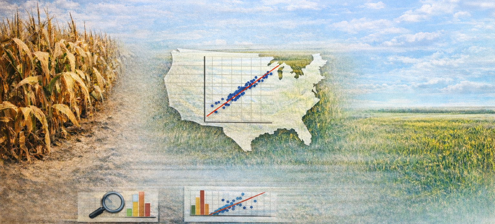

library(tidyverse)
library(modelsummary) #regression tables
library(broom) #processing regression outputWeek 7 Lab: Regression as a Tool for Answering Questions

In this lab, you will use simple linear regression to study the relationship between drought severity and corn yield.
We will move from intuition to estimation, then to interpretation and diagnostics. The core idea is to connect regression output to plain-language statements about the real world.
Learning Objectives
By the end of the lab, you will be able to:
- Fit and interpret a simple linear regression in R (
lm(y ~ x)). - Explain coefficients with units and comparison language.
- Distinguish estimate size from uncertainty (SE, t-stat, p-value).
- Generate predictions and interpret differences between predictions.
- Use basic diagnostics (QQ plot and residual plots) to assess fit.
- Evaluate whether a variable definition (annual mean drought) matches the research question.
Lab Notebook
Open up a word processing document (e.g., Google Doc, Word, or plain text) to serve as your lab notebook. Use this to respond to questions, document decisions, and interpret results. You should also comment your R script thoroughly to explain your code and reasoning.
Section 0: Conceptual Recap
Before we dive into the data, take a moment to think about the relationship between drought and corn yield. Consider the following questions:
- What would you expect the relationship to look like?
- Linear or curved?
- Strong or weak?
Question 1 (5%): Write a few sentences describing your expectations for the relationship between:
- drought and corn yield
- corn yield and farm GDP
Be sure to include the direction of the relationship, whether you expect it to be linear or non-linear, and how strong you think the relationship will be.
Section 1: Simulated Data and Slope Interpretation
We start with a controlled simulated dataset so coefficient interpretation is clear.
The simulation function is provided in a separate script. Source it and run it, but do not inspect its internals before estimating the model.
Preliminaries
- Create a folder called
lab_07. - Create a new R script called
lab_07.R. - Add a short header comment with your name and lab purpose.
- Load libraries:
Simulate and estimate
Let’s simulate some data and fit a regression model to it. The simulation function will generate a dataset with a known relationship between drought and yield, but you won’t know the parameters until you inspect the function after estimation.
# Source hidden simulation function (provided by instructor)
source("https://jbayham.github.io/arec-330/modules/07_regression/includes/simulate_lab07_data.R")
sim_dat <- simulate_lab07_data()Now we have a dataset sim_dat with two variables: drought (the independent variable) and yield (the dependent variable). We will first visualize the relationship with a scatterplot using ggplot2. The parameter alpha controls the transparency of the points, which can help visualize overlapping points.
# Scatterplot
ggplot(sim_dat, aes(x = drought, y = yield)) +
geom_point(alpha = 0.7) +
labs(
title = "Simulated corn yield vs drought",
x = "Drought index",
y = "Yield (bu/acre)"
)Now we can fit a simple linear regression model to estimate the relationship between drought and yield. The function lm() fits a linear model, where yield ~ drought specifies that yield is the dependent variable and drought is the independent variable. The ~ symbol is used to separate the dependent variable from the independent variable(s) in the formula (like an equals sign). You can add additional variables to the model using +. After fitting the model, we use summary() to get detailed output about the coefficients, standard errors, t-statistics, and p-values.
# Fit regression
mod_sim <- lm(yield ~ drought, data = sim_dat)
summary(mod_sim)Prediction and difference interpretation
The function predict() generates predicted values from the fitted model. You can specify new data to get predictions for specific values of the independent variable. In this case, we will generate predicted yields for drought levels of 2 and 3, and then calculate the difference between those predictions to interpret the slope. Then we will generate predicted values for all the original data to visualize the fitted regression line on the scatterplot.
# Generate predicted values for drought = 2 and drought = 3
pred_2_3 <- predict(
mod_sim,
newdata = tibble(drought = c(2, 3))
)
pred_2_3
pred_2_3[2] - pred_2_3[1]
#Now generate predicted values in the original data to visualize the line
sim_dat <- sim_dat %>%
mutate(pred_yield = predict(mod_sim, newdata = sim_dat))
#You can plot the line on top of the points
ggplot(sim_dat, aes(x = drought, y = yield)) +
geom_point(alpha = 0.7) +
geom_line(aes(y=pred_yield),linewidth=1,color="darkred") +
labs(
title = "Simulated corn yield vs drought",
x = "Drought index",
y = "Yield (bu/acre)"
)Question 2 (7%): Interpret the estimated slope in one sentence with units.
Then answer:
- Based on your estimate, what do you think the true slope is likely to be?
- Is the intercept meaningful here?
- If drought increases by 0.5, what happens to predicted yield?
- Compare predicted yield at drought = 2 versus drought = 3.
- What do you think the hidden data-generating relationship might be (intercept + slope)?
After writing your answers, inspect the simulation function and compare your inferred “truth” to the actual parameters.
Interpretation prompts:
- “What does the slope mean in the real world?”
- “If drought increases by 0.5, what happens?”
Section 2: Regression on Real Data (Year 2017)
Now apply the same workflow to real data.
Read in the data created in prior labs:
We will focus on the year 2017 for this section, but you will replicate the steps for a different year in Section 3.
combined_dat <- read_csv(
"https://jbayham.github.io/arec-330/modules/05_EDA/includes/final_merged_data.csv"
)
dat_2017 <- combined_dat %>%
filter(year == 2017)
glimpse(dat_2017)Scatter plot and regression line
Similar to before, we will start with a scatter plot to visualize the relationship between drought severity (mean DSCI) and corn yield (yield in bushels per acre). The aes() function specifies the aesthetics of the plot, where x is the independent variable (mean DSCI) and y is the dependent variable (yield). The geom_point() function adds points to the plot, and labs() adds titles and axis labels.
ggplot(dat_2017, aes(x = mean_dsci, y = yield_bu_per_acre)) +
geom_point(alpha = 0.7) +
labs(
title = "Corn yield and drought severity (2017)",
x = "Mean DSCI (annual)",
y = "Yield (bu/acre)"
)Then, we can estimate a simple linear regression model to quantify the relationship between mean DSCI and yield. The formula yield_bu_per_acre ~ mean_dsci specifies that yield is the dependent variable and mean DSCI is the independent variable. After fitting the model, we use summary() to get detailed output about the coefficients, standard errors, t-statistics, and p-values.
mod_2017 <- lm(yield_bu_per_acre ~ mean_dsci, data = dat_2017)
summary(mod_2017)Guided walkthrough of output
Interpretation of the regression output is critical for understanding the relationship between drought and yield. The coefficient for mean_dsci tells us the estimated change in yield (in bushels per acre) for a one-unit increase in mean DSCI, holding all else constant. The standard error gives us a sense of the uncertainty around that estimate. The t-statistic and p-value help us assess whether the observed relationship is statistically significant, meaning it is unlikely to have occurred by random chance alone.
The package broom provides tidy functions to extract pieces of the regression output. Use tidy() to get coefficient estimates, standard errors, t-statistics, and p-values. Use glance() to get overall model fit statistics.
tidy(mod_2017)
glance(mod_2017) %>%
select(r.squared, nobs)Use your output to interpret each item:
- Coefficient = direction + size of association.
- Standard error = uncertainty around the estimate.
- t-stat / p-value = signal relative to noise.
- R-squared = how much variation in yield is explained by the variables in the model.
Regression table with modelsummary
modelsummary is a powerful package for creating regression tables. You can customize the statistics shown, add stars for significance, and export to Word. The example below shows how to create a table for the 2017 model with standard errors in parentheses and significance stars.
modelsummary(
list("2017 model" = mod_2017),
statistic = "({std.error})",
stars = TRUE,
gof_map = c("nobs", "r.squared"),
#output = "results.docx"
)Uncomment the output argument to export a Word document with the table into your current directory.
Question 3 (7%):
- What is the unit of observation in
dat_2017? - Interpret the slope estimate with units.
- Is the slope estimate statistically significant at the 5% level? Explain what this means in plain language.
- Explain how your answer may inform your confidence in using the information for decision-making.
- What is the R-squared and how would you explain it to a non-technical audience?
Section 3: Diagnostics
Diagnostics help you decide whether the linear model assumptions are reasonable enough for interpretation.
QQ plot for residual normality check
QQ plots compare the distribution of residuals to a normal distribution. If points roughly follow the red line, residuals are approximately normal. The vertical axis is the quantiles of the residuals, and the horizontal axis is the quantiles of a normal distribution. Deviations from the line suggest departures from normality and may indicate that the model assumptions are violated.
qqnorm(residuals(mod_2017))
qqline(residuals(mod_2017), col = "red", lwd = 2)Question 4 (6%): Does your QQ plot suggest that residuals are approximately normal? Research why you might care about normality of residuals in linear regression and explain what you learn.
Try a different year
Replicate the above steps for a different year. Specifically:
- Create a scatter plot with regression line for a different year.
- Fit a regression model and interpret the slope, including statistical significance.
- Generate a QQ plot and residuals vs fitted plot for the new model.
Question 5 (12%): Do you see similar patterns in the scatter plot, regression output, and diagnostics between 2017 and the other year you selected? Discuss why that may be the case and what it implies about the relationship between drought and yield.
Taking a step back
Question 6 (10%): Our current drought measure is annual mean DSCI.
Is annual mean DSCI across the whole year the most relevant drought measure for assessing the impact on corn yield? Propose an alternative measure. Describe how you would create it and why it might be more relevant for understanding the relationship between drought and yield.
What other factors do you think are important for explaining variation in corn yield?
Section 4: Fixed Effects Regression
We have prepared a dataset with multiple years of data and state-level identifiers. You will use this dataset in the next session to explore how to control for unobserved differences across states that may be correlated with both drought and yield.
Fixed effects regression is a common technique used in economics to account for these unobserved differences. By including state-level and time fixed effects, we can control for factors that vary across states but are constant over time, and vary across time but constant across states allowing us to isolate the impact of drought on corn yield more accurately.
Demeaning the data
The first step in fixed effects regression is to “demean” the data by subtracting the state-level means from each variable. This removes the between-state variation and allows us to focus on the within-state variation over time.
Code
dat_demeaned <- combined_dat %>%
group_by(state_alpha) %>%
mutate(
yield_bu_per_acre_dm = yield_bu_per_acre - mean(yield_bu_per_acre),
mean_dsci_dm = mean_dsci - mean(mean_dsci)
) %>%
ungroup()Estimate the FE regression
After demeaning the data, we can fit a regression model using the demeaned variables. The coefficient on the demeaned drought variable will now represent the within-state effect of drought on yield, controlling for any time-invariant differences across states.
Code
#Estimate fixed effects regression
fe_model <- lm(yield_bu_per_acre_dm ~ mean_dsci_dm, data = dat_demeaned)
summary(fe_model)
#use broom to extract coefficients and fit statistics
tidy(fe_model)
glance(fe_model) %>%
select(r.squared, nobs)
#or use modelsummary to create a table
modelsummary(
list("FE model" = fe_model),
statistic = "({std.error})",
stars = TRUE,
gof_map = c("nobs", "r.squared"),
#output = "fe_model_results.docx"
)Question 7 (15%): Compare the fixed effects regression results to the simple regression results from Section 2.
- How do the slope estimates, standard errors, and significance levels differ?
- What does this suggest about the importance of controlling for unobserved differences across states when estimating the relationship between drought and yield?
Multiple fixed effects
In addition to state fixed effects, we can also include year fixed effects to control for any time-specific factors that may be affecting yield across all states (e.g., technological improvements, national policies, etc.). You can add more fixed effects if your data permits.
We introduce a new package called fixest that makes it easy to estimate models with multiple fixed effects without having to manually demean the data. The syntax for including fixed effects is to use the | symbol in the formula. For example, yield_bu_per_acre ~ mean_dsci | state + year specifies that we want to control for both state and year fixed effects. The function will handle the demeaning and estimation for you. etable() is a convenient function from fixest for summarizing the results in a table format.
library(fixest)
fe_model_multi <- feols(yield_bu_per_acre ~ mean_dsci | state_alpha + year, data = combined_dat)
etable(fe_model_multi)Question 8 (12%): Compare the results from the multiple fixed effects model (state and year) to the single fixed effects model (state only) and the simple regression model (no fixed effects).
Section 5: Drought and Farm GDP
Explore the relationship between drought and farm GDP using the same workflow as above. You can focus on a fixed effects regression, but you should think carefully about the choice of fixed effects. Create a scatter plot, fit a regression model, interpret the coefficients.
Question 9 (10%): Interpret the regression output for the relationship between drought and farm GDP. Think about what Farm GDP measures. Be sure to include the direction and size of the relationship, and statistical significance (assume \(\alpha=0.05\)).
Mechanisms
The relationship between drought and farm GDP is likely to be mediated by changes in crop yields. Drought can reduce yields, which may also increase prices as supply decreases.
Question 10 (8%): Based on your understanding of the relationship between drought, yield, and farm GDP, propose a mechanism that could explain the observed relationship between drought and farm GDP. Do your analyses support this mechanism? What additional data or analyses would you need to further investigate this mechanism?
Section 6: Limitations
Regression is a powerful tool, but it has limitations. It relies on assumptions that may not always hold in real-world data. For example, omitted variable bias can occur when there are unobserved factors that affect both the independent and dependent variables, leading to biased estimates. Reverse causality can cause problems if the direction of causality is not clear. Additionally, measurement error in the independent variable can lead to attenuation bias, where the estimated effect is biased towards zero.
Question 11 (8%): Reflect on the limitations of regression analysis in the context of our drought and yield example.
Discuss potential sources of bias in the relationship between drought and corn yield and categorize them (e.g., omitted variable bias, reverse causality, measurement error).
How might we address these issues in future analyses?
Deliverables
This is a two-part lab. Wait until the end of the second session to submit your work. You will submit both a log file and a lab notebook.
Submit on Canvas:
Log file (
lab_07.log) Use the sink-source-sink pattern. Your log should include code, output and comments explaining each step.Lab notebook with answers to Questions 1-11, including the regression table, the two scatterplots with regression lines and the diagnostics plots. You should create the table and figures for 2017 and the other year you selected.